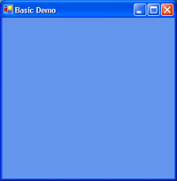
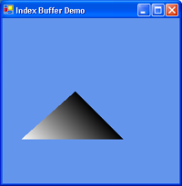
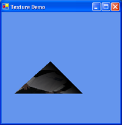
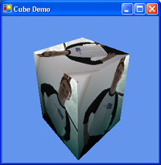

Managed DirectX 9 Graphics: Improving On A Good Thing
By Thobias Jones
Discuss this article or Managed DirectX in our forums!
Download the code for this article (330 KByte Download)
In late 1999, Microsoft released DirectX 8, introducing a straightforward and easy-to-use API as well
as adding support for limited programmability. Months passed, and while the API from a graphics
standpoint was compelling, there remained a lack of books and articles on the subject. For a long
time,
my tutorial
on GameDev showing how to get started with DirectX 8 was one of the few articles filling
the void. You can think of this article as the second edition. :)
Since then, Microsoft has given us DirectX 9, which among other features has given us support for
full programmability, a high level shading language, and support for the .NET framework. Support
for these features is welcome, but the documentation, especially for Managed DirectX is
fairly minimal, and this is what we are going to correct now. Managed DirectX adds support for
DirectX to the .NET framework.
The big change is that today we are going to use C# instead of C++. Why C#? While C++ can be used
with Managed DirectX, C# is the core language of .NET, and Managed DirectX was designed with C# in
mind. It also gives us a simpler syntax and garbage collection. So what is the advantage of
using Managed DirectX over regular DirectX? Simplicity. The less code we have to write, the more
time we can spend on actual stuff like game development. Resource management is reduced and the
syntax is streamlined. Features like stronger type safety and IntelliSense add to this speed.
But is Managed DirectX ready for prime time? A large downside is that the .NET framework must be
distributed with your application (about 25 MB), since the .NET framework does not have a large
user penetration yet. This certainly discourages its use in shareware games, which need a smaller
downloadable. The other concern is speed. Managed DirectX is based on the .NET framework, which
is more abstracted and may not perform as well as C++. Since Managed DirectX is mostly pushing
commands to the GPU, it is generally not the bottleneck. The designers if Managed DirectX expect
the speed to be within 95% of regular DirectX. Writing tools or code that is not speed
critical would definitely benefit from Managed DirectX. However, writing a large game in a
managed languages such as C# might be difficult.
This article assumes some knowledge of a graphics API and knowledge of a programming language
such as C++ or Java. C# experience is helpful, but the examples should be easy enough to follow.
The Managed DirectX SDK is required, but Microsoft initially shipped a botched version that had
an expiration. You can download the
corrected SDK.
Our Basic Application (1_BasicDemo.cs)
I will present several demos along the way. To simplify things, each demo will be built on the
previous demo.
A Windows Form is an object oriented abstraction of a window and is .NET's style of window
management. In our code we create a new Form just as we would create any other object and
its constructor gets called.
The basic application we will start with is a simple C# skeleton that creates a form and calls
a pair of methods, InitDirect3D and DrawScene. The first 70 lines
or so of each demo use basic principles that you can find in
Petzold,
so I won't reproduce them here. The demos are all the same up until this point.
Type names in .NET can be quite long, and one thing to note is that most of the types in
the demos are fully qualified to be clear. We will add the DirectX and Direct3D namespaces to the
demo as follows, to reduce the names as much as we can while still being clear:
using Microsoft.DirectX;
using Direct3D = Microsoft.DirectX.Direct3D;
The first line introduces the Microsoft.DirectX namespace to the application. This gives
us Vectors and Matrices that we can use unqualified. The second line creates an alias for the
Direct3D namespace, so that we do not have to use Microsoft.DirectX.Direct3D every time
we need a type from that namespace.
Let us start our initialization code in InitDirect3D, which is called after the form is
created. InitDirect3D and DrawScene are methods that will change as we move
forward, so be sure to experiment with them. The first step is to create a Direct3D device, but
that cannot be done until we know a bit more about what kind of device we want to create.
Direct3D.PresentParameters presentParams;
presentParams = new Direct3D.PresentParameters();
presentParams.Windowed = true;
presentParams.SwapEffect = Direct3D.SwapEffect.Copy;
PresentParameters describes information such as the format of display surfaces, the type of
swapping mechanism, and whether the app is windowed or full screen.
In this example, the swap method is copying instead of page flipping
because the demo is windowed. The back buffer is set to match the
surface of the current video mode. A surface represents an area that
can be drawn upon. Surfaces have properties like resolution and color
depth. It is important that our back buffer and our primary buffer
match in these properties.
Windowed programs are great, but most games run in full screen mode. Full screen is easy to
do, and the only change that is necessary is to create the proper PresentParameters
before the device object is created.
Direct3D.PresentParameters presentParams;
presentParams = new Direct3D.PresentParameters();
presentParams.Windowed = false;
presentParams.SwapEffect = Direct3D.SwapEffect.Flip;
presentParams.BackBufferFormat =
Direct3D.Manager.Adapters.Default.CurrentDisplayMode.Format;
presentParams.BackBufferWidth =
Direct3D.Manager.Adapters.Default.CurrentDisplayMode.Width;
presentParams.BackBufferHeight =
Direct3D.Manager.Adapters.Default.CurrentDisplayMode.Height;
presentParams.FullScreenRefreshRateInHz =
Direct3D.PresentParameters.DefaultPresentRate;
presentParams.PresentationInterval = Direct3D.PresentInterval.One;
Here we see that we change the swap effect to flip so that we are
page flipping instead of copying the back buffer. You can continue to
copy if you wish. For example, you may want to do this for antialiasing
purposes.
Since we control the whole screen, the back buffer now requires a height and width to
determine how big to make the screen. We also set the refresh rate and the presentation
speed, which is how often to page flip. We flip once every screen refresh, instead of
immediately, so that our images don't tear.
When demos are run in full screen mode, you can exit the demo by pressing Alt+F4.
We can now create a device object. A member variable must be added:
private Direct3D.Device device = null;
And the device object is instantiated:
device = new Direct3D.Device(0,
Direct3D.DeviceType.Hardware,
this,
Direct3D.CreateFlags.SoftwareVertexProcessing,
presentParams);
This constructor has five parameters, but luckily, none of them are
complex. The first parameter is the device number, and zero tells DirectX
to use the primary monitor.
This is only an issue if we are using a multi-monitor system. We can
use a secondary monitor by specifying the number of the monitor we
wish to use. We can get the number of adapters in the system by creating
a Direct3D.AdapterListEnumerator object and calling the Count
method.
The next parameter, Hardware, tells DirectX to
use the GPU for display purposes. Other options include
Reference and Software,
which are the reference software rasterizer and a user
specified software rasterizer respectively. Usually we will want to
use the GPU, but we may want to use reference rasterizer for
some testing purposes. We certainly should ship with the GPU version.
We then specify which form will be rendered. For a full screen application,
this needs to be a top-level window.
SoftwareVertexProcessing specifies the type of vertex
processing. You can also use HardwareVertexProcessing or
MixedVertexProcessing, but we chose software for maximum compatibility,
though it is unlikely that any DirectX 9 level cards do not support hardware
processing.
We will want to use hardware vertex processing if we want hardware assisted
T & L.
Finally, we pass in the presentParams structure and an object reference
is returned. If an exception is thrown, then its possible that we passed in
valid parameters, but the device does not support them. To determine the features
of your card, you can check the Caps structure by calling
Direct3D.Manager.GetDeviceCaps. This is done in the shader demos to
determine the shader version numbers.
The nicest part about this method is that it automatically creates
all our needed back buffers and depth buffers. Clipping is
automatically enabled, as is back face culling. That is the end of our
InitDirect3D method. Let's see it in its entirety:
private readonly bool windowed = true;
private Direct3D.Device device = null;
private void InitDirect3D()
{
Direct3D.PresentParameters presentParams;
presentParams = new Direct3D.PresentParameters();
presentParams.Windowed = windowed;
if(windowed)
{
presentParams.SwapEffect = Direct3D.SwapEffect.Copy;
}
else
{
presentParams.SwapEffect = Direct3D.SwapEffect.Flip;
presentParams.BackBufferFormat =
Direct3D.Manager.Adapters.Default.CurrentDisplayMode.Format;
presentParams.BackBufferWidth =
Direct3D.Manager.Adapters.Default.CurrentDisplayMode.Width;
presentParams.BackBufferHeight =
Direct3D.Manager.Adapters.Default.CurrentDisplayMode.Height;
presentParams.FullScreenRefreshRateInHz =
Direct3D.PresentParameters.DefaultPresentRate;
presentParams.PresentationInterval = Direct3D.PresentInterval.One;
}
device = new Direct3D.Device(0,
Direct3D.DeviceType.Hardware,
this,
Direct3D.CreateFlags.SoftwareVertexProcessing,
presentParams);
}
This code is extremely simple, and a lot of the error handling that is done in regular DirectX
is now handled by exceptions in Managed DirectX. This makes our error handling uniform and
makes our primary code path very clean.
We now turn our attention to the DrawScene method. For our first
demo, we want to just get something on the screen. Once we get to
this point, adding to it should be trivial.
This is the DrawScene method we will start with:
private void DrawScene()
{
device.Clear(Direct3D.ClearFlags.Target,
System.Drawing.Color.CornflowerBlue,
1.0f,
0);
device.BeginScene();
device.EndScene();
device.Present();
}

This code is very simple since the error handling is done with
exceptions. Clear will flood fill the buffers we specify. We can fill
the z-buffer, the back buffer, or the stencil buffer. In this example,
we want to fill the back buffer with the color cornflower blue. So we set the
flags to Direct3D.ClearFlags.Target, and the color to cornflower blue.
BeginScene and EndScene don't do anything in this example, but we
will be using them in future versions. These methods will wrap all of
our primitive drawing routines.
The Present method will cycle to the next back buffer. Since we
only have one back buffer and one front buffer, the buffers simply
flip. The back buffer will be displayed and we can now draw on the
front buffer (actually, since we not doing page flipping, we are
actually still drawing on the back buffer, but the concept is the same,
and our code does not change).
If we run the program now, we should get a window that is filled with
cornflower blue. If everything worked okay, the next section begins
writing code to draw triangles, the primitive that is the heart of
3D game programming. But for illustration sake, compare our DrawScene
method against the C++ version I used in the DirectX 8 tutorial:
HRESULT DrawScene()
{
HRESULT hr;
do
{
// clear back buffer
hr = pID3DDevice->Clear(0,
NULL,
D3DCLEAR_TARGET,
D3DCOLOR_RGBA(0,63,0,0),
0,
0);
if(FAILED(hr))
break;
// start drawing
hr = pID3DDevice->BeginScene();
if(FAILED(hr))
break;
// Put all drawing code here
hr = pID3DDevice->EndScene();
if(FAILED(hr))
break;
// flip back buffer to front
hr = pID3DDevice->Present(NULL, NULL, NULL, NULL);
} while(0);
return hr;
}
|
This code has exactly the same number of calls, but the presence of error
handling really adds a lot of mud to what is otherwise clear code. Also, the
parameter list for Clear is shorter. Managed DirectX with C# can
cut down the required code in the common case.
Drawing Triangles (2_VertexBufferDemo.cs)
Triangles have a few interesting properties that make them
attractive to 3D programming. They are always planar. A combination of
triangles can make up any shape. In the upcoming examples, we will use
triangles to build a cube. I used a rotating cube as the base for my
first 3D engine. If it's good enough for one programmer, it's good enough
for another. :)
In its simplest form, a triangle consists of three vertices. How
these vertices are defined is up to the programmer. A 2D triangle may
be as plain as x and y coordinates for each point. A beefy 3D program
may specify coordinates for position, transformed coordinates, color,
several texture coordinates, and possibly other information.
The exact semantics of how to use this information is slightly
different between OpenGL and Direct3D. Drawing discrete triangles would
use this information raw and each triangle would be defined separately. However,
when drawing a model, vertices are shared between triangles, so storing
all three vertices for each triangle would be inefficient. For both
OpenGL and Direct3D, we can specify all the vertices of a model in a
huge array. Triangles are defined as a triple of indices into this
array. We can take this approach to the extreme by specifying many
indices in another array, and passing the index array to a method,
such as DrawIndexedPrimitives, which will draw a large part of the model
at once (which is exactly what we will do later on).
We will get this far eventually, but for the next example we will
just set up the foundations for this approach. In DirectX 8, Microsoft
introduced the concept of the flexible vertex format. This allowed
us to define a structure with whatever information we wanted. This
was a little bit too flexible, and in Managed DirectX 9, many of the
common vertex formats are already predefined under Direct3D.CustomVertex.
The vertex format we will use for this example is TransformedColored,
which is the format used when we have vertices that are already transformed
(meaning that we won't be doing matrix
operations) and each vertex has a color associated with it.
Go ahead and create a static array of this structure, named m_aVertices,
defining each of the three vertices for a triangle.
private static Direct3D.CustomVertex.TransformedColored[] m_aVertices =
{
new Direct3D.CustomVertex.TransformedColored(120.0f,
120.0f,
1.0f,
1.0f,
0),
new Direct3D.CustomVertex.TransformedColored(200.0f,
200.0f,
1.0f,
1.0f,
0),
new Direct3D.CustomVertex.TransformedColored(30.0f,
200.0f,
1.0f,
1.0f,
int.MaxValue),
};
This creates a static array of TransformedColored structures. Since we only have to worry
about position and color, the parameters are simple. The first four parameters of each
constructor are the coordinates of a vertex of the triangle. The final coordinate is the
color, expressed as an integer. There are four coordinates for a vertex because it is
already transformed into (x,y,z,w) form.
In our InitDirect3D method, we have to create a vertex buffer. This introduces a
problem that we didn't have in the first demo. Our device can be "lost" at any moment
(such as resizing a window), and if this happens, any data that was stored on the GPU
is lost. For this reason, we have to recreate our vertex buffer every time the device
is lost. Luckily, Managed DirectX can tell us when our device is lost. Instead of
creating our vertex buffer in InitDirect3D, we'll create a new method that will
handle the device lost event:
private Direct3D.VertexBuffer vertexBuffer = null;
public void OnDeviceReset(object sender, System.EventArgs e)
{
Direct3D.Device dev = (Direct3D.Device)sender;
if(null != vertexBuffer)
{
vertexBuffer.Dispose();
}
vertexBuffer = new Direct3D.VertexBuffer(
m_aVertices[0].GetType(),
m_aVertices.Length,
dev,
Direct3D.Usage.WriteOnly,
Direct3D.CustomVertex.TransformedColored.Format,
Direct3D.Pool.Default);
}
In the first pair of parameters, we pass the type and size of our vertex buffer in
bytes. In C# it would have also been valid to pass
typeof(Direct3D.CustomVertex.TransformedColored) as the first parameter.
The vertex buffer needs to know what device it is associated with so
it can hook events on the device. So that information is sent. This brings up an
interesting situation. The vertex buffer allocates data when it is created, but
since it hooks events, vertex buffer will never get garbage collected until the device
is released since there is still
a reference to it. Every time we need to recreate the vertex buffer (or
recreate any resource), it needs to be Disposed, which is a way to
force the release of the resources.
Since the app won't read from these vertices, we pass in
WriteOnly. There are various other flags that we could pass
here to specify how our vertex array would be used, but we can go
ahead and trust DirectX to do the right thing for now.
Next we specify the vertex format that we are using. We already defined our
vertex format as the type of m_aVertices, so we use that type. Later,
when we do our own matrix transformations, this will change to reflect
the type of m_aVertices. However, we don't have to define any special
flags here since we are using a predetermined vertex format.
The last parameter represents the type of memory management we
require. We can trust DirectX again, and pass Direct3D.Pool.Default,
which tells DirectX to use its default memory locations.
In InitDirect3D, an event handler is set up to call our OnDeviceReset
method. After that, we'll call the method ourselves to set the initial state of the device.
device.DeviceReset += new System.EventHandler(this.OnDeviceReset);
OnDeviceReset(device, null);
Notice that we used += instead of = when assigning the event handler. The reason is that
many listeners can be added to an event, and if we used = then only our event handler would
be called. This is a well-behaved demo, so we will just add ourselves to the chain.
Our vertex buffer is useless without filling it with meaningful data:
vertexBuffer.SetData(m_aVertices, 0, Direct3D.LockFlags.None);
In DirectX 8 we had to lock the vertex buffer and copy all of the data, usually element
by element, into the vertex buffer. In Managed DirectX it is one line! We send it the
vertex array to use, the start index, and no flags. For dynamic vertex buffers we may
want to use Direct3D.LockFlags.Discard.
A trio of calls will tell Direct3D about our vertex format and set our
vertex array as our active vertex array (we can have multiple vertex
arrays).
dev.VertexShader = null;
dev.VertexFormat = Direct3D.CustomVertex.TransformedColored.Format;
dev.SetStreamSource(0, vertexBuffer, 0);
We're not using a vertex shader yet, so that should be nulled out. The
vertex format is the same format that was specified in the VertexBuffer
constructor. Since these are the same, you should use a macro or some
other method to ensure that when one changes the other is changed.
SetStreamSource tells DirectX to use vertexBuffer as the active vertex array,
and gives the offset into the array on where to start.
The last thing we need to do is to turn off lighting so DirectX will use our vertex
colors for the lighting:
dev.RenderState.Lighting = false;
That was easy. You can now add the code to draw a triangle. In
between the BeginScene and EndScene calls in the DrawScene method,
insert this:
device.DrawPrimitives(Direct3D.PrimitiveType.TriangleList,
0,
m_aVertices.Length / 3);
TriangleList will command DirectX to draw discrete triangles,
with each vertex specified individually. We start at index zero, and
specify the number of triangles to draw as the last parameter.
If everything has been done correctly, we should have a triangle drawn on your previous blue background.
Indexed Triangles (3_IndexBufferDemo.cs)
In the above code, we told DirectX to draw straight from the vertex
array. The main issues with this are size and, indirectly, speed. Take
a cube for example. A cube has eight vertices. Using the above code,
we would need to draw 12 triangles, each with three vertices, for a
total of 36 vertices in our vertex array. This is more than four times
the number of vertices in the cube itself!
It would be better if we could just list each vertex once and index
into this array. This way, we only have to transform eight vertices
instead of 36. As it turns out, we can do this.
First we set up an index buffer. This is the list of indices into the vertex array.
dev.Indices = new Direct3D.IndexBuffer(m_aIndices[0].GetType(),
m_aIndices.Length,
dev,
Direct3D.Usage.WriteOnly,
Direct3D.Pool.Default);
The variable m_aIndices is defined as:
private static ushort[] m_aIndices = { 0, 1, 2 };
The IndexBuffer constructor is similar to the VertexBuffer constructor above.
First we pass the type and size of the buffer in bytes. Other flags are the
same as before; WriteOnly because we only write to the
buffer, Direct3D.Pool.Default to use the default memory configuration.
The type is passed so DirectX knows the size of each index, which is 16 bits.
The alternative is to use a 32-bit buffer (a C# uint), but besides being
far larger than we need, it also doubles our bus traffic.
Keep in mind that this buffer will also need to be Disposed when
we lose it.
Next we fill in this buffer, just as we did with the vertex buffers:
dev.Indices.SetData(m_aIndices, 0, Direct3D.LockFlags.None);
We simply send our index list to the index buffer and it will take
care of locking and unlocking just like the vertex buffer.
In the DrawScene method, we can get rid of the DrawPrimitives
method in exchange for a DrawIndexedPrimitives method:
device.DrawIndexedPrimitives(Direct3D.PrimitiveType.TriangleList,
0,
0,
m_aVertices.Length,
0,
m_aIndices.Length / 3);

We are still drawing a triangle list as before. We pass the offset
into the index buffer, the minimum vertex index used (zero in this case),
the number of vertices used (three), the index number to start on (zero),
and the number of triangles to render (one).
If all goes well, this program should produce the exact same output
as the last one. It's a bit more work, but it is also more scalable.
Adding Texture (4_TextureDemo.cs)
Texturing is just one of those things that adds so much visual bang
for the buck, that is would be ludicrous not to add it. Luckily for us,
doing this in Managed DirectX is painless.
First we need texture coordinates in our vertex format structure.
We'll change it to Direct3D.CustomVertex.TransformedColoredTextured
which from the name should be obvious that it adds texture coordinates.
Then we add the appropriate values to our m_aVertices array. This
type change needs to be reflected in the vertex buffer constructor and
the VertexFormat property on the device.
DirectX will now draw the texture, but you have to tell it what texture to draw. In our
InitDirect3D method, we add:
System.Reflection.Assembly assembly;
assembly = System.Reflection.Assembly.GetExecutingAssembly();
System.IO.Stream stream;
stream = assembly.GetManifestResourceStream("_4_Texture.photo.png");
Direct3D.Texture texture;
texture = Direct3D.TextureLoader.FromStream(dev, stream);
stream.Close();
dev.SetTexture(0, texture);

This code is less difficult than it looks. In previous versions of this article I would use D3DX to
load a texture from a file, but its a bit more robust to read from resource embedded into
the executable, in case the file does not exist. The first pair of lines opens up a stream
that reads from our embedded texture. If we wanted to read from more than one stream
(if we had more than one texture), we could use assembly.GetManifestResourceNames
to get a list of the embedded resources.
Next, we read from the stream into a texture object, and finally set texture 0 to
use the texture we just loaded. We can have several stages of textures, but for
now, we will just use the one. We could also set the TextureState property on
the device to add different features like blending and bump mapping, but we will just
use the default values for now.
Now we have a texture-mapped triangle.
Using Matrices and Extra Texture Coordinates (5_CubeDemo.cs)
It is time to build our cube. Now that we are entering the 3rd
dimension (the previous examples were on a single plane), we have to
enable our z-buffer. We also have to set up some matrices for model,
world, and projection transformations.
Enabling the z-buffer is fairly easy. When we create a device,
we must add some extra fields to our presentParams structure:
presentParams.EnableAutoDepthStencil = true;
presentParams.AutoDepthStencilFormat = Direct3D.DepthFormat.D16;
|
This tells DirectX to use a 16-bit z-buffer. While this enables z-buffering,
we can force z-buffering on if we turn it off at some point:
dev.RenderState.ZBufferEnable = true;
Lastly, in our DrawScene method, we
must modify the Clear method to clear the z-buffer in addition to the
back buffer:
device.Clear(Direct3D.ClearFlags.Target | Direct3D.ClearFlags.ZBuffer,
System.Drawing.Color.CornflowerBlue,
1.0f,
0);
We add the flag Direct3D.ClearFlags.ZBuffer to enable z-buffer clearing, and
we pass 1.0 as the fill value for the z-buffer. Now all of the
polygons will be drawn correctly.
Since we will be doing some transformations to our vertices, we
can once again change our m_aVertices structure to remove the
extra rhw parameter (used for pre-transformed vertices). So our
m_aVertices type becomes PositionColoredTextured.
We'll also have to change the constructor calls in the array and
change all of the vertex format references to this type.
DirectX has several types of matrices available, but we will use
only three: World, View, and Projection. The World transformation will
move the cube into world coordinates. The View transformations will
move the world into view space. The Projection matrix will scale the
world to make it look as if it has depth.
Now we add a call to a new method, BuildMatrices, to our DrawScene
method. BuildMatrices will build and activate your three matrices as
described above. After each matrix is built, it is set on the device.
As an example, we will build a no-op matrix:
device.Transform.World = Matrix.Identity;
As you can see, this sets the world transformation matrix to an
identity matrix. No structures need to be filled, and no methods
need to be called.
In the example program, our model coordinates are already
transformed to world coordinates, so we could just leave this code as
is. However, this needs a bit of flavor. In our code, we start our
BuildMatrices function with:
Microsoft.DirectX.Matrix matWorld;
matWorld = Matrix.RotationY(System.Environment.TickCount / 500.0f);
device.Transform.World = matWorld;
This setup will rotate the cube about the Y-axis. The parameter
TickCount / 500.0f is the angle in radians based on the system clock.
Doing this will give a smooth constant rotation.
Now we'll build the other two matrices:
Microsoft.DirectX.Vector3 cameraPosition = new Vector3(0.0f, 1.2f, -2.0f);
Microsoft.DirectX.Vector3 cameraTarget = new Vector3(0.0f, 0.0f, 0.0f);
Microsoft.DirectX.Vector3 cameraUpVector = new Vector3(0.0f, 1.0f, 0.0f);
device.Transform.View = Matrix.LookAtLH(cameraPosition,
cameraTarget,
cameraUpVector);
device.Transform.Projection = Matrix.PerspectiveFovLH((float)System.Math.PI / 4,
4.0f / 3.0f,
1.0f,
100.0f);

Matrix.LookAtLH builds a left-handed view matrix (some textbooks
call this the camera). We pass three vectors: the position of the
camera, the point we are looking at, and a vector that points up. This
matrix is passed to DirectX as the view matrix.
Matrix.PerspectiveFovLH builds a left-handed projection matrix
that uses a variable field of view. Math.PI / 4 is the field of view in
radians, which is 45 degrees. Then the aspect ratio is passed (most
monitors are 4:3), as are the values representing the near and far clip planes.
Lastly, we tell DirectX to use this as our projection matrix.
After adding the rest of the vertices to our vertex array, we are ready to go.
The result should be a spinning textured cube.
Note, we are not reusing the vertices as described in example
three. This is because we would need up to three texture coordinates per
vertex and we only have specified the one.
Converting to Assembly Shaders (6_ShaderAsmDemo.cs)
One of the most important additions to DirectX 8 was the programmable
pipeline. In DirectX 9, this pipeline is even more flexible, allowing
a greater range of effects.
In the previous examples, we would let DirectX manage the transformation
and lighting in what is known as the fixed-function pipeline. Now we will
replace the fixed function pipeline with a shader to allow for future
programmability. We won't make any changes to the functionality; the shader
will simply mimic the behaviour of the fixed function pipeline.
The first step is to create shader flags. For the most part we don't have
to do anything special here. The flags are mostly to specify parameters
for compiling or assembling the shader. We'll set a debug flag for when
we are in debug mode, so we can use a shader debugger if we wanted.
Direct3D.ShaderFlags shaderFlags = Direct3D.ShaderFlags.None;
#if (DEBUG)
shaderFlags |= Direct3D.ShaderFlags.Debug;
#endif
The next step is to actually create our vertex shader.
Direct3D.GraphicsStream gs;
stream = assembly.GetManifestResourceStream("_6_ShaderAsm.VertexShader.vsh");
gs = Direct3D.ShaderLoader.FromStream(stream, null, shaderFlags);
vertexShader = new Direct3D.VertexShader(device, gs);
gs.Close();
stream.Close();
This is very similar to what we used when we created the texture. A stream is
opened to an embedded resource and that stream is sent to DirectX to assemble
our shader. Finally a new VertexShader object is created from the
assembled code.
There are some subtle things to note here. Notice that the two streams are closed
when we are done using them. Even though C# is a garbage collected language, there
are times where we want to release an objects resources even though the object
still exists.
Another thing that isn't shown in the code here, is that this code actually resides
in the InitDirect3D method instead of the OnDeviceReset method. In
DirectX 9, shader objects do not need to be recreated on a device reset, so we can
create them once and hold on to them.
The vertex shader needs to be paired with an appropriate pixel shader. The pixel
shader is set in the same way.
stream = assembly.GetManifestResourceStream("_6_ShaderAsm.PixelShader.psh");
gs = Direct3D.ShaderLoader.FromStream(stream, null, shaderFlags);
pixelShader = new Direct3D.PixelShader(device, gs);
gs.Close();
stream.Close();
Now would be a good time to take a look at the vertex and pixel shaders themselves.
The vertex shader is straightforward and doesn't use any DirectX 9 specific
functionality. All it does is multiply the transformation matrix against the
incoming vertex position. It then sends the new position and the raw vertex
color and texture coordinates to the pixel shader.
vs.1.1
dcl_position v0
dcl_color v1
dcl_texcoord v2
m4x4 oPos, v0, c0 ; Transform the vertex into screen-space
mov oD0, v1 ; Save the diffuse color
mov oT0.xy, v2 ; Save texture coords
In DirectX 9, it is now required to declare all of the used vertex registers with
the type that they represent. This is so that the proper registers can be matched
against our VertexElement structure which we will create in a moment. As you
can see, the position, color, and texture coordinate are passed, which matches
our PositionColoredTextured vertex type.
ps.1.1
tex t0 ; Sample texture
mul r0, t0, v0 ; Multiply texture color with interpolated diffuse color
The pixel shader is even simpler. The texture color is sampled from the texture
and the resulting color is multiplied against the diffuse color from the vertex
shader. The result in the r0 register is the final color of the pixel.
Now we have a pair of shaders, we need to send our program data to the shaders.
Direct3D.VertexElement[] decl;
decl = new Direct3D.VertexElement[]
{
new Direct3D.VertexElement(0,
0,
Direct3D.DeclarationType.Float3,
Direct3D.DeclarationMethod.Default,
Direct3D.DeclarationUsage.Position,
0),
new Direct3D.VertexElement(0,
12,
Direct3D.DeclarationType.Color,
Direct3D.DeclarationMethod.Default,
Direct3D.DeclarationUsage.Color,
0),
new Direct3D.VertexElement(0,
16,
Direct3D.DeclarationType.Float2,
Direct3D.DeclarationMethod.Default,
Direct3D.DeclarationUsage.TextureCoordinate,
0),
Direct3D.VertexElement.VertexDeclarationEnd
};
device.VertexDeclaration = new Direct3D.VertexDeclaration(device, decl);
This array describes each of our three vertex elements, position, color, and texture
coordinate. This is needed so that DirectX can copy our data from the m_aVertices
array to the correct registers in the vertex shader.
First we tell which vertex stream we are reading from. We pass zero since we only
use one vertex stream. Next is the offset into the vertex where the data starts. This
equals the offset of the previous element, plus the size of the previous element. We start
at zero. Next we pass the type of data. Position is a triple of floats, color is four
bytes, and our texture coordinates are a pair of floats. The DeclarationMethod is
generally used with bump or displacement mapping, so we'll just use the default behaviour.
Next we tell DirectX the type of data the element represents. The last parameter is called
the usage index, and we can just set that to zero.
The final element in the array is VertexDeclarationEnd. This is a predefined
element that tells DirectX that this is the end of the array.
We have described most of the inputs to the vertex shader, but we have not told the
shader what the transformation matrix is. Instead of setting the transformation
matrices in BuildMatrices, we will combine the matrices ourselves and
send it to the shader.
Matrix mat = Matrix.Multiply(matWorld, matView);
mat = Matrix.Multiply(mat, matProj);
// The assembly vertex shader does not use the Direct3D matrix format for
// its matrix instructions (m4x4) so the matrix must be transposed to work.
mat.Transpose(mat);
device.SetVertexShaderConstant(0, mat);
As you can see, we took the world, view, and projection matrices and multiplied
them together. This matrix is set as the first vertex shader constant register
(actually its set as the first 4 registers, since a matrix is 4 vectors wide).
The trick here is that the matrix is transposed before it is set. This is because
the vertex shader uses the m4x4 instruction, which expects a transposed matrix.
You can check the included vertex shader sample code, which shows how to fix
this problem.
Lastly, we can set the vertex and pixel shaders on the device in OnResetDevice
and our cube will spin once more! One thing the sample does, which I did not show
here is that it checks the supported vertex and pixel shader version numbers. If
the card does not support the correct numbers, it will switch to use the reference
rasterizer.
Shaders in the High Level Shader Language (7_ShaderHLSLDemo.cs)
Once our shaders become non-trivial, it is welcome to use a higher-level language
than assembly to program in. DirectX 9 introduces HLSL, which is nearly identical
to nVidia's Cg. We'll convert the previous example to use HLSL instead of assembly.
To compare what the difference between assembly and HLSL, this is the single
HLSL shader program that we are going to use.
struct VS_INPUT
{
float3 position : POSITION0;
float4 color : COLOR0;
float2 texture0 : TEXCOORD0;
};
struct PS_INPUT
{
float4 position : POSITION;
float4 color : COLOR0;
float2 texture0 : TEXCOORD0;
};
// Vertex shader
PS_INPUT VertexShader(
VS_INPUT vertex,
uniform float4x4 matWorldViewProj)
{
PS_INPUT vsOut;
vsOut.position = mul(matWorldViewProj, float4(vertex.position, 1));
vsOut.color = vertex.color;
vsOut.texture0 = vertex.texture0;
return vsOut;
}
// Pixel shader
float4 PixelShader(PS_INPUT pixel, uniform sampler2D diffuse) : COLOR
{
return tex2D(diffuse, pixel.texture0) * pixel.color;
}
It is slightly longer than our previous assembly shaders, but this is because it is
a very simple shader. When we turn to more complex shaders, the advantage is clearer.
However, you can see that this code is more structured, and provides a degree
of type safety that we didn't have before.
The first function is our vertex shader, and it takes a VS_INPUT structure
and our transformation matrix as inputs. It outputs a PS_INPUT structure that
the pixel shader uses as an input. This function does the same as our assembly shader,
and transforms our vertex by our transformation matrix and leaves the
color and texture coordinates as is. Note how the VS_INPUT structure
matches the definition of our vertex element array.
The pixel shader takes the PS_INPUT structure and a reference to a texture
as inputs. All it does is multiply the texture color against the color in PS_INPUT.
The only real change that needs to be made to program is to create the vertex and
pixel shaders from this code instead of the assembly code.
// Both of the Vertex and Pixel Shaders reside in one HLSL file
System.IO.Stream stream;
stream = assembly.GetManifestResourceStream("_7_ShaderHLSL.Shader.fx");
Direct3D.GraphicsStream gs;
gs = Direct3D.ShaderLoader.CompileShaderFromStream(stream,
"VertexShader",
null,
"vs_1_1",
(int)shaderFlags);
vertexShader = new Direct3D.VertexShader(device, gs);
gs.Close();
stream.Seek(0, System.IO.SeekOrigin.Begin);
gs = Direct3D.ShaderLoader.CompileShaderFromStream(stream,
"PixelShader",
null,
"ps_1_1",
(int)shaderFlags);
pixelShader = new Direct3D.PixelShader(device, gs);
gs.Close();
stream.Close();
Since both shaders reside in one file, we can keep our stream to the embedded
resource open and just reset it when we want to compile a new shader. The difference
is that we now call CompileShaderFromStream, which accepts a HLSL shader. In each
case we pass the stream to read from and shader flags as in the assembly case. We also
pass the function for the shader and the type of shader profile
The last thing we need to do is to undo the matrix transpose that we did in
BuildMatrices. HLSL knows the DirectX matrix format, and know it needs
to treat it differently. Now our cube is now spinning using a HLSL shader.
Wrapping Up
This is just a small glimpse of what you can do with Managed DirectX. Managed DirectX
opens up a number of possibilities for rapid development of media software. While
the documentation is not great, I hope this article helps shed some light on questions
you may have had on how to implement graphics code in Managed DirectX.
Running without Visual Studio
These samples were developed under Visual Studio .NET 2003, but they only require
a C# compiler and the DirectX 9 SDK. The
.NET Framework SDK
comes with a command line C# compiler which can be used with the DirectX SDK.
To compile the examples, you would need to do something like:
csc /lib:c:\winnt\microsoft.net\manage~1\v9.00.1126
/reference:Microsoft.DirectX.dll
/reference:Microsoft.DirectX.Direct3D.dll
/t:winexe BasicDemo.cs
You may need to change the path to your copy of the Managed DirectX assemblies. You
might also need to add references to additional assemblies depending on which sample
you are compiling.
To run these apps on a non-development machine, you will need to install the
.NET Framework 1.1
and DirectX 9.
Note that when you install DirectX, you must use the /installmanageddx switch,
or Managed DirectX will not be installed. You cannot use Windows Update to install
Managed DirectX.
About the Author
Thobias Jones is the founder and Chief Software Architect of Genkisoft and
was the primary author of Genkisoft TurboHex,
our flagship hex editor. Thobias has a wide range of experience in 3D graphics
and systems programming.
Want to discuss this article or Managed DirectX? Check out our forums!
|